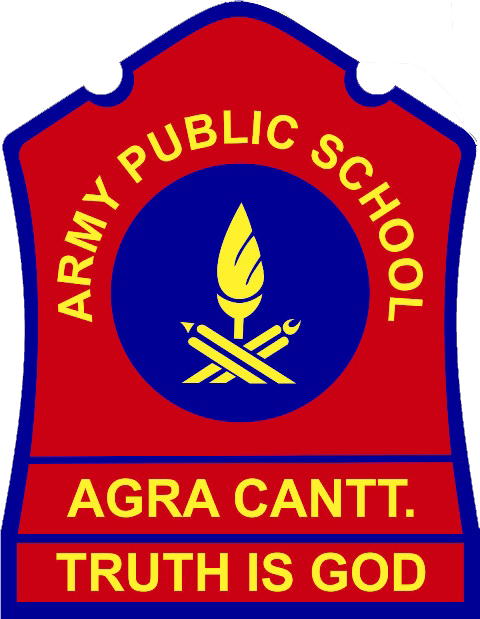
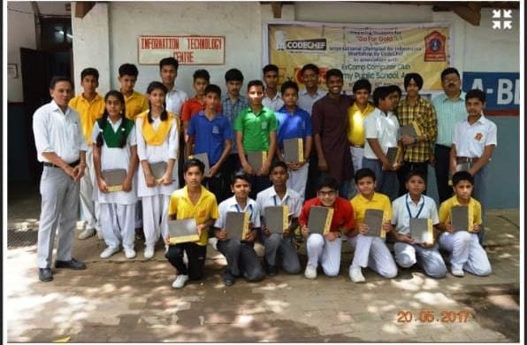

My journey into the world of technology has been a fascinating adventure that started during my school days and continues to evolve as I pursue my BTech in Computer Science Engineering. This post is a reflection on the key milestones, experiences, and lessons learned along the way.
School Days at Army Public School, Agra
My tech journey began at Army Public School, Agra. It was here that I first discovered my passion for technology and computer science. From the early days of learning basic programming concepts to participating in tech-related extracurricular activities, my interest in this field grew exponentially.
Python Workshop in 9th Grade
One of the most memorable experiences during my school years was attending a Python workshop organized by CodeChef in 9th grade. This workshop was a turning point for me. It introduced me to the world of programming and the endless possibilities it offers. I learned the basics of Python, worked on simple projects, and gained confidence in my coding abilities.
IT Vice Captain in 11th Grade
In 11th grade, I was honored to be elected as the IT Vice Captain of my school. This role allowed me to collaborate with peers on various tech initiatives, organize coding competitions, and mentor junior students. It was a great opportunity to develop leadership skills and deepen my technical knowledge.
Forest Management Project Using Python and MySQL
During my 12th grade, I undertook a significant project on forest management using Python and MySQL. This project involved developing a database system to track and manage forest resources efficiently. It was my first experience with integrating a programming language with a database, and it solidified my interest in database management and backend development.
Transition to Abdul Kalam Technical University

After graduating from high school with a strong academic record, I embarked on my journey to pursue a BTech in Computer Science Engineering at Abdul Kalam Technical University. This transition marked a new chapter in my educational journey.
BTech in Computer Science Engineering (2021-2025)
At Abdul Kalam Technical University, I have been exposed to a diverse range of subjects and technologies. The rigorous curriculum, combined with hands-on projects and industry exposure, has significantly broadened my technical skills. I've had the opportunity to delve deeper into programming languages such as Python, Java, JavaScript, and C, and work with web technologies like HTML, CSS, and SQL.
Exploring AI and Machine Learning
One of the most exciting aspects of my university education has been the opportunity to explore AI and Machine Learning. These cutting-edge fields have opened my eyes to the transformative potential of technology in solving real-world problems. I have been actively participating in online courses, workshops, and projects to gain a deeper understanding of these areas.
Conclusion
From my early days at Army Public School, Agra, to my current studies at Abdul Kalam Technical University, my educational journey in tech has been marked by curiosity, hard work, and a passion for learning. Each step has brought new challenges and opportunities, shaping me into a well-rounded individual with a deep love for technology. As I continue on this path, I look forward to the future and the exciting possibilities that lie ahead.